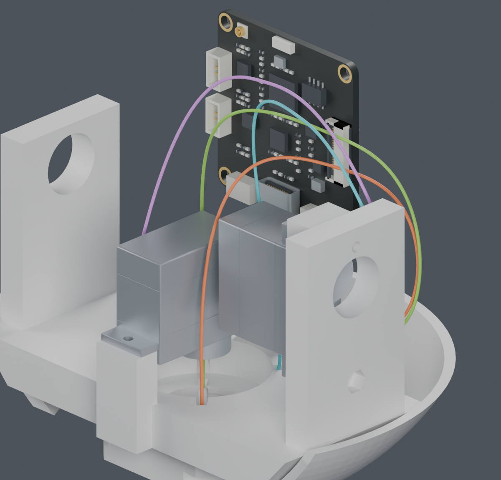
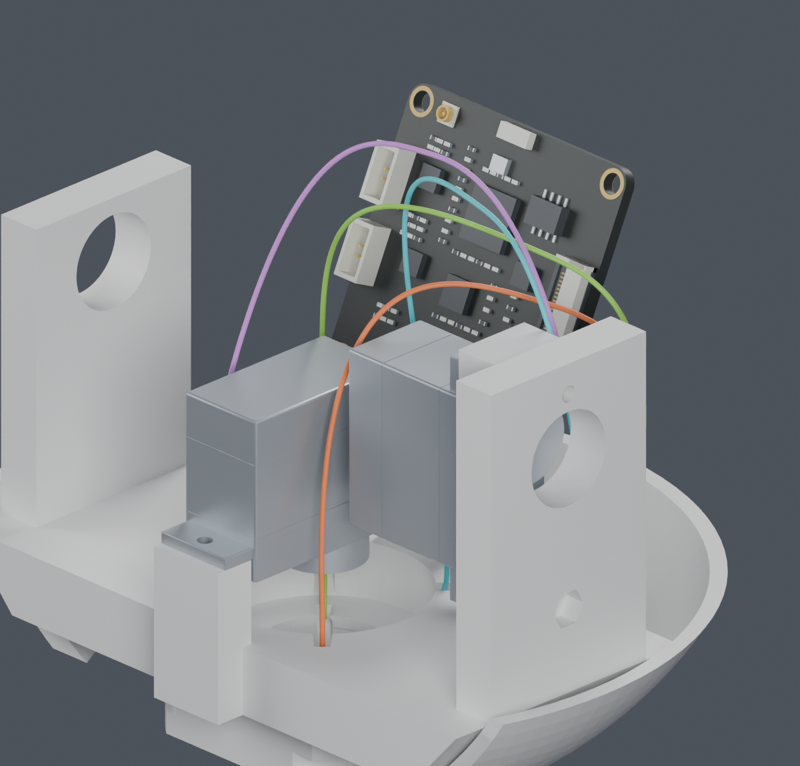

完整线束仍为BLOCKED。主模型、STL和装配视频未改；本页不能作为下料或加工图。
| 资料 | 证据 |
|---|---|
| SH、PH尺寸与适用线径 | JST SH · JST PH |
| 完整端子料号压接参考 | 逐料号结果和版本限制 |
| CAM板端UART位置 | 官方照片左→右GND、3V3、TXD、RXD，与逻辑4、3、2、1一致；硬件已复核 |
实际插座完整料号、正对插合面的针腔图及线端镜像视图仍未确认。当前零位模型的slot0..3→逻辑1..4只是照片配准推断，不改正式针序。
供应商按图制作已经确定。公开资料由项目查找；路线、固定点、分支与长度也由项目完成。
已补齐官方照片中的CAM板端UART位置，硬件复核与现有逻辑针序一致；实际插座料号及线端针腔视图仍未确认。四根UART各自已有连接两端的恒长候选，19条单线的实体、全线自交和既有前缀检查通过；整束组合仍未达到0.3mm间隔要求。已定位抬头25°时首根线上行段靠近CAM末根出线，提前R7侧弯的局部候选通过，尚未接回整束。固定点、整束装入和最终下料长度仍需设计；主模型未改。


为了查看线路，图中隐藏了部分支架与外壳；检查包含源实体。图中的大线环没有真实保持件，不能把规定的曲线当成自然运动形状。
| 检查 | 当前结果 |
|---|---|
| 19条单线：有限姿态实体、全线自交、原前缀间隔 | PASS，尚非整束 |
| 曲线全参数长度与弯曲界 | PASS；十个俯仰角，非连续角度运动或寿命验证 |
| 四根线同时满足0.3mm间隔 | BLOCKED；保留失败结果 |
| 首根线提前R7侧弯 | 局部PASS；与CAM端最小间隙下界0.462mm，尚未接回整束 |
| 固定点、整束装入、最终长度 | 仍需设计 |
完整说明 · 照片证据接收 · 整束检查 · 长度与弯曲界 · 具体间距位置 · 提前侧弯 · 检查副本 · 命令 · 来源